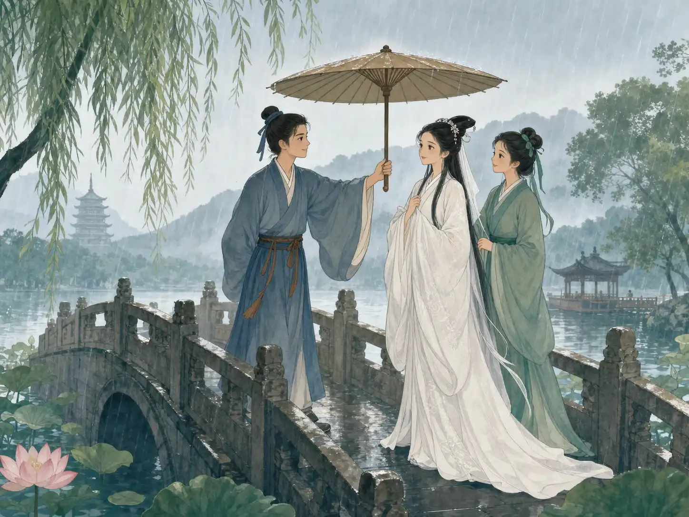
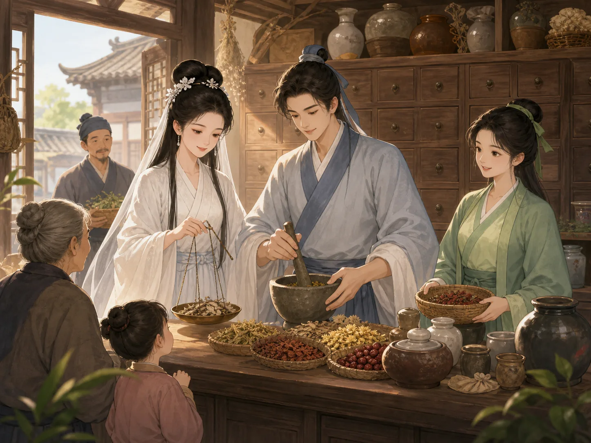
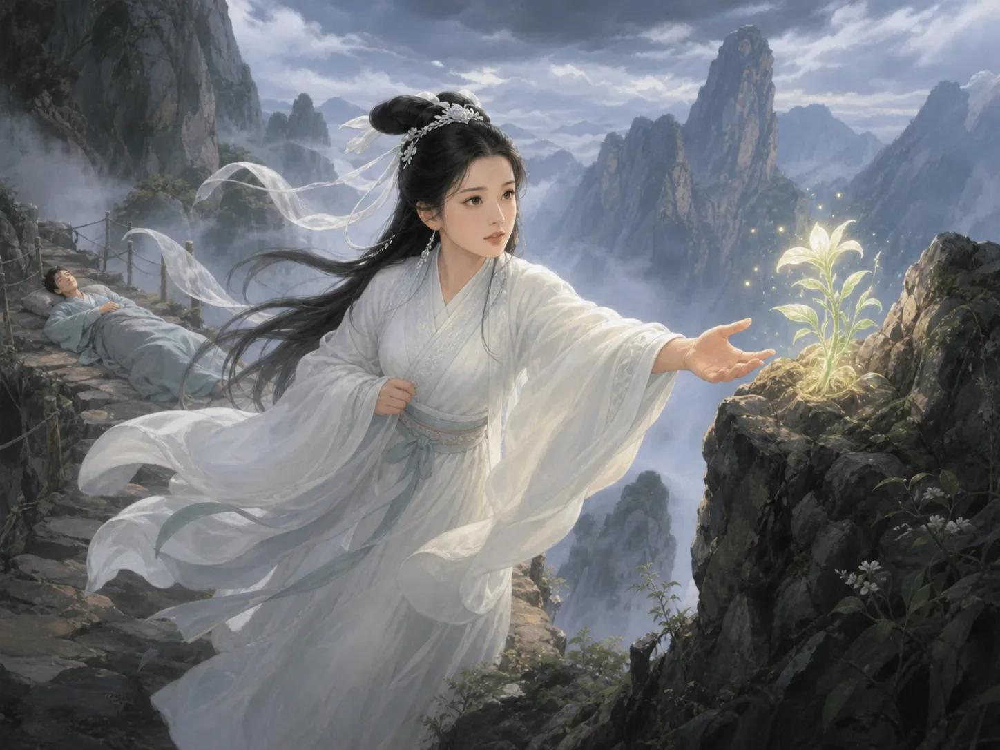

白蛇传
The Legend of the White Snake
Page 1
一把伞，让他们再次相遇
One Umbrella Brings Them Together

Rain falls by West Lake, and Xu Xian holds his umbrella over Bai Suzhen. Xiaoqing watches with a secret smile.
很久以前，一条小白蛇差点被人捉走，一个善良的小男孩救了它。许多年过去，小白蛇学会法术，变成了一位穿白衣的女子，名叫白素贞。她一直记得那个孩子，想去人间找到他、谢谢他。故事说，小男孩后来重新出生，长大后成了许仙。
陪白素贞来到人间的，还有小青。小青原本是一条青蛇，也能变成人。她勇敢、爽快，有时候脾气还有一点急。两个人像姐妹一样，一路来到杭州西湖寻找许仙。
春雨忽然落下时，她们正走到一座名叫“断桥”的石桥上。桥其实好好的，并没有断。白素贞和小青没有带伞，许仙便把自己的伞举到她们头顶。白素贞认出了他。小青看看许仙，又看看白素贞，忍不住偷偷笑了起来。借来的伞，也给了他们第二次见面的理由。
Long ago, a kind boy saved a small white snake from being caught. Many years passed. The snake learned magic and took the shape of a woman named Bai Suzhen. She never forgot the boy and went to the human world to thank him. In this version of the tale, the boy had been born again and was now a young man named Xu Xian.
Bai Suzhen did not travel alone. Her friend Xiaoqing came with her. Xiaoqing was a green snake who could also take human form. She was brave, quick to speak, and sometimes quick to lose her temper. The two were as close as sisters, and their search brought them to West Lake in Hangzhou.
Spring rain began to fall just as they reached a stone bridge called Broken Bridge. Despite its name, the bridge was not broken. The women had no umbrella, so Xu Xian held his over them. Bai Suzhen knew at once that he was the boy she had come to find. Xiaoqing looked at Xu Xian, then at Bai Suzhen, and hid a smile. The borrowed umbrella gave them a reason to meet again.
Page 2
药铺里最忙的三个人
Three Busy People in a Medicine Shop

Bai Suzhen reads the recipes, Xu Xian mixes the medicine, and Xiaoqing helps the customers. Their shop stays busy.
许仙来取伞时，两个人越谈越喜欢彼此。后来，白素贞和许仙成了亲。他们开了一间药铺：白素贞熟悉各种草药，许仙认真配药，小青则忙着称药、拿药，还要把排错队的人叫回来。
日子一天天过去，三个人帮助了许多生病的人。可是有一位名叫法海的和尚发现了白素贞的秘密。和尚是在寺庙里生活和修行的人。法海认为蛇变成的人不应该和普通人组成家庭，便一次又一次警告许仙。
端午节到了。古时候，人们会在这一天喝一种叫作雄黄酒的特别节日酒，还以为它能赶走蛇虫。法海让许仙请白素贞喝一杯。白素贞不想让许仙怀疑，只好喝了一口。她立刻变回大白蛇。许仙吓得倒在地上，再也叫不醒了。
When Xu Xian came to collect his umbrella, he and Bai Suzhen talked and soon fell in love. They married and opened a medicine shop. Bai Suzhen knew many healing herbs, Xu Xian carefully mixed the medicine, and Xiaoqing weighed herbs, helped customers, and called back anyone who stood in the wrong line.
The three helped many sick people. But a monk named Fahai discovered Bai Suzhen's secret. A monk is a religious man who lives and studies at a temple. Fahai believed that a snake who had taken human form should not live as part of a human family, and he warned Xu Xian again and again.
Then came Dragon Boat Festival. Long ago, people drank a special festival wine called realgar wine. They believed it could keep snakes and insects away. Fahai told Xu Xian to offer a cup to Bai Suzhen. She drank a little so he would not become suspicious. At once, she changed back into a great white snake. Xu Xian was so frightened that he fell to the floor and would not wake up.
Page 3
最高的山上，有一棵救命草
A Life-Saving Herb on a High Mountain

Mountain wind nearly blows Bai Suzhen from the path, but she still reaches for the magic herb that can save Xu Xian.
白素贞醒来以后，看见许仙一动不动，心里又怕又难过。小青守在许仙身边，白素贞则立刻动身，去一座很远的仙山寻找能救命的灵芝草。
山路又窄又陡，冷风在悬崖边呼呼地吹。白素贞好几次差点滑倒，还是一步一步爬到了山顶。守护仙草的仙人听说她曾经在药铺救过许多人，又看见她不肯丢下许仙，终于让她带走一棵灵芝。
白素贞赶回家，把灵芝熬成药。许仙慢慢睁开了眼睛。这一次，白素贞把自己的秘密全都告诉了他。许仙看着这个为了救他翻山越岭的人，终于不再害怕。旁边的小青抱着胳膊，长长地松了一口气：“终于不用再藏着秘密了！”
When Bai Suzhen awoke and found Xu Xian lying still, she was frightened and heartbroken. Xiaoqing stayed beside him while Bai Suzhen hurried to a faraway magic mountain in search of a life-saving herb.
The path was narrow and steep. Cold wind whipped along the cliffs, and Bai Suzhen nearly slipped more than once. Still, she climbed to the top. The keeper of the magic herb heard how she had helped sick people at the medicine shop and saw that she would not give up on Xu Xian. At last, he let her take one shining plant.
Bai Suzhen rushed home and made the herb into medicine. Slowly, Xu Xian opened his eyes. This time, she told him her whole secret. Xu Xian looked at the person who had crossed dangerous mountains to save him, and he was no longer afraid. Beside them, Xiaoqing folded her arms and let out a long breath. “Finally! No more secrets.”
Page 4
雷峰塔关不住这个故事
Leifeng Pagoda Cannot Hold Her Forever
Bai Suzhen is trapped beneath Leifeng Pagoda, but Xiaoqing does not leave her behind. She is determined to set her free.
法海并没有放弃。他把许仙带到江边的金山寺，不准他回家。白素贞和小青赶到寺前，请法海让许仙出来。法海不肯。白素贞只好用法术叫来江水。浪花一次次冲上寺庙的台阶，法海却举起手杖，一次次把水挡了回去。最后，白素贞和小青只好先离开，没能把许仙带走。
后来，许仙逃出寺庙，赶到断桥找到她们。一家人刚刚团聚，法海又追来了。他用法术抓住白素贞，把她关在西湖边的雷峰塔下。雷峰塔是一座高高的塔，一层压着一层。白素贞被困在黑暗中，小青却逃了出去。
小青没有忘记她。许多年里，她努力练习法术，终于变得足够强大。她回到西湖，打破困住白素贞的魔法，雷峰塔轰隆隆地倒了下来。白素贞终于走出黑暗，重新见到了自己的家人。
Fahai did not give up. He took Xu Xian to Jinshan Temple beside a wide river and would not let him go home. Bai Suzhen and Xiaoqing came to the temple and asked for Xu Xian. Fahai refused, so Bai Suzhen used her magic to send the river rushing toward the temple. Wave after wave crashed over the stone steps, but Fahai raised his staff and pushed the water back. At last, Bai Suzhen and Xiaoqing had to leave without Xu Xian.
Later, Xu Xian escaped from the temple and found them at Broken Bridge. The family had only just come together when Fahai followed. He caught Bai Suzhen with another spell and trapped her beneath Leifeng Pagoda beside West Lake. A pagoda is a tall tower built in many levels, one above another. Bai Suzhen was shut away in the dark, but Xiaoqing escaped.
Xiaoqing did not forget her. She practiced her magic for many years and grew strong enough to return. At last, she broke the spell around the tower. Leifeng Pagoda came crashing down, and Bai Suzhen stepped into the sunlight. She was free to see her family again.
西湖边的白伞和青衣
A White Umbrella and a Green Dress by the Lake
断桥和雷峰塔都在杭州西湖边，是真正可以去看的地方。下次看到春雨落在西湖上，不妨想象一下：桥那边是不是有一位年轻人正举起伞，而两位姑娘从雨中走来，一个穿白衣，一个穿青衣？
Broken Bridge and Leifeng Pagoda are real places beside West Lake in Hangzhou. If you ever see spring rain falling there, look across the bridge. Can you imagine a young man raising an umbrella as two women—one in white and one in green—come walking through the rain?